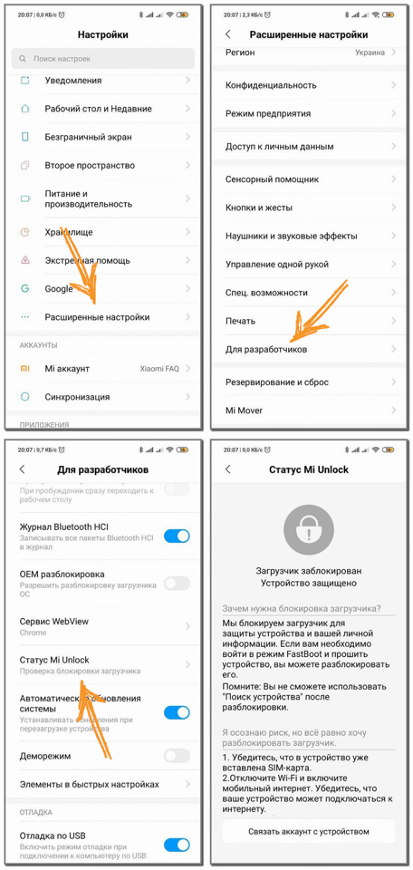
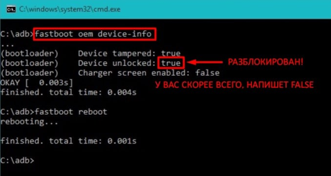
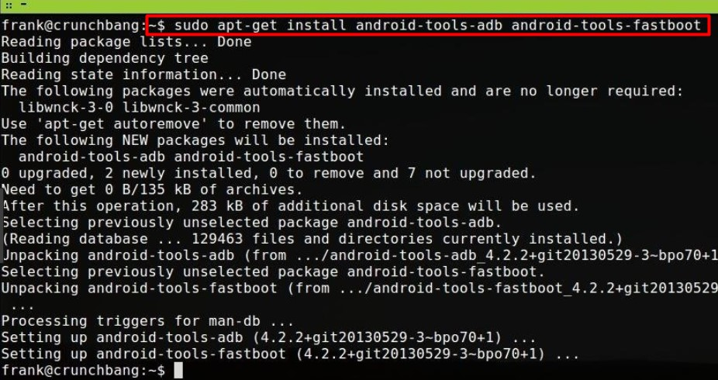
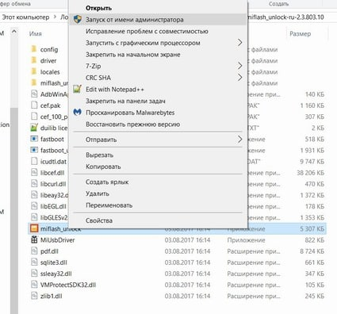

Перед тем, как разблокировать загрузчик, надо выяснить, не был ли он уже разблокирован. И только потом начинать процедуру разблокировки (описана тоже в этой статье). Для разблокировки потребуется наличие SIM-карты (так как приходит SMS-сообщение) и должен работать мобильный интернет (не совсем понятно почему, но говорят что через WiFi разблокировка не срабатывает).
Теперь я расскажу о 3 способах проверки статуса загрузчика на смартфонах Xiaomi и Redmi. Рекомендую делать проверку минимум 2 методами, так как до сих пор встречаются модели (купленные за «очень дешево» или б/у) которые были прошиты либо взломаны в обход разблокировки загрузчика. В таком случае, первый способ может показать строку что загрузчик разблокирован, но при проверке через ADB — все будет иначе (правду покажет только ПК).
Самый простой способ, встроенный в ваше устройство и не требующий дополнительных программ.

Если по каким-то причинам первый вариант не устраивает можно проверить разблокирован ли загрузчик на Xiaomi с помощью ПК. Инструкция прилагается для двух операционных систем – Windows и Linux.
Это сложный способ, но он самый точный.

Если указано «true» – бутлоадер разблокированный, в противном случае «false», что говорит о заблокированном загрузчике.
sudo fastboot devices – здесь появляется номер устройства, иногда добавляется и модель;
sudo fastboot oem device-info – а вот тут уже статус загрузчика, аналогичный, как и на операционной системе Windows.

Если появилась надпись «waiting device», вероятнее всего, действия выполнены не от имени администратора.
И последним, третьим способом проверка статуса бутлоадера является включение телефона, а точнее его загрузочный экран. Чтобы это сделать нужно:
* * *
Ранее нужно было получать одобрение на разблокировку загрузчика (писать письмо в службу поддержки) и ждать несколько дней. Теперь этого делать не нужно, однако появился так званный «таймер». Более подробно читайте ниже, в официальной инструкции.
Для разблокировки загрузчика обязательным условием является наличие Xiaomi аккаунта на устройстве. Если его еще нет — читаем как создать Mi-аккаунт. Если на телефоне уже привязана учетная запись — переходим ко второму шагу.
Теперь нужно связать Mi-аккаунт с вашим телефоном. Для этого последовательно выполняйте указанные шаги. Часть пунктов уже выполнилась при проверке статуса загрузчика с помощью телефона. Там же есть наглядные скриншоты.
Если во время привязывания аккаунта к смартфону возникли трудности, то посмотрите это видео.
Обратите внимание: переходить к третьему шагу нужно только по прошествии срока ожидания на подтверждение разблокировки загрузчика. Иногда разработчики Xiaomi меняют таймер, увеличивая срок ожидания или наоборот уменьшая.
После окончания обязательного срока ожидания потребуется скачать программу Mi Flash Unlock. Загрузить ее можно с официального сайта en.miui.com/unlock/ или с нашей статьи. После распаковываем содержимое архива и по желанию переносим в корень системного диска или оставляем на рабочем диске.
Я оставил архив на диске D и разблокировка загрузчика прошла нормально.
Теперь открываем программу Ми Анлок от имени администратора, видим белый экран с текстом на китайском языке (если локализованная версия как у меня — то на русском), где указаны правила отказа от ответственности. Соглашаемся и кликаем на соответствующую кнопку.

Попадаем в новое окно, требующее войти в свой Mi-аккаунт. Вводим пароль и свой ID (привязанный номер телефона или почты). Внимательно проверяем указанные данные и раскладку клавиатуры, поскольку именно на этом этапе у многих пользователей возникают проблемы с появлением такого уведомления: «Вы неверно ввели пароль и/или логин». Нажимаем «Sign in».
Иногда может появится окно с процедурой проверки разрешения разблокировки, это может длится несколько минут.
После возвращаемся к самому смартфону. Выключаем его и переводим в режим fastboot, одновременно зажав клавишу включения и уменьшения звука. С помощью USB-кабеля подключаем телефон к компьютеру.
Завершающий финальный этап: программа проверяет устройство, если все условия соблюдены — пойдет процесс разблокировки загрузчика. Ждем несколько минут (в моем случае 25 секунд), и если все сделали правильно – получаем уведомление об успешной разблокировке – три зеленых галочки. Готово.
Чаще всего проблемы появляются из-за самого сервера компании, в большинстве случаев вины пользователя нет. Но, тем не менее, необходимо знать, как с ними разобраться. Предлагаем к ознакомлению приблизительный список известных проблем и методы их устранения:
Если у вас появилась другая проблема — прочитайте нашу статью, в которой собраны решения к большинству известных ошибок.
Если после разблокировки загрузчика его нужно обратно закрыть — то стоит прибегнуть к нашей отдельной статье. Данной теме посвящена подробная инструкция, где все наглядно показано.